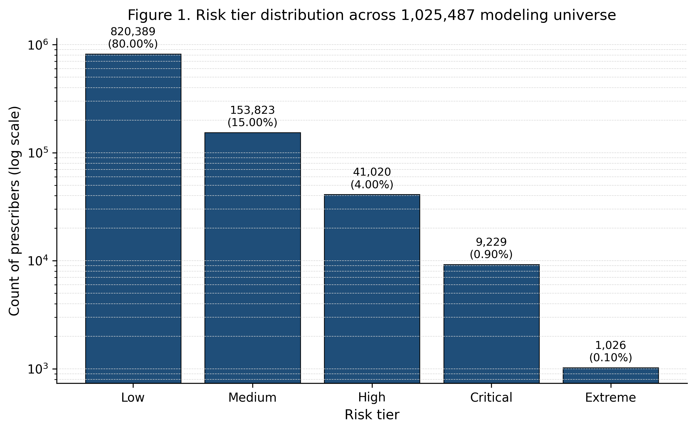
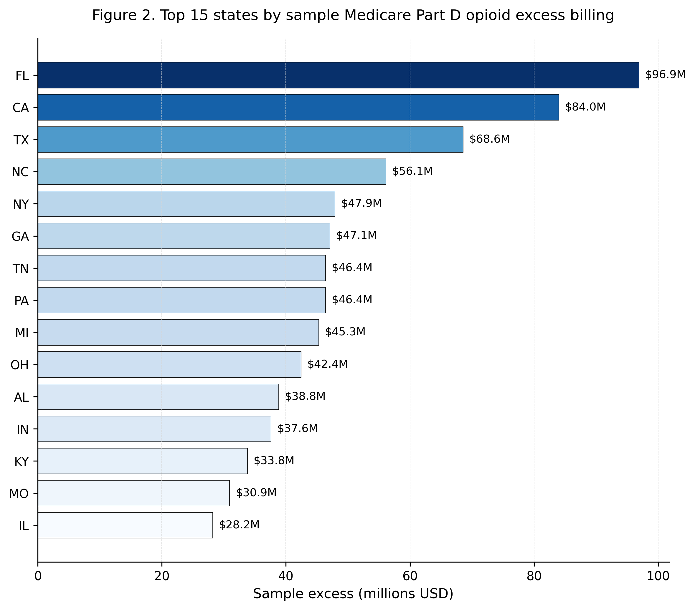
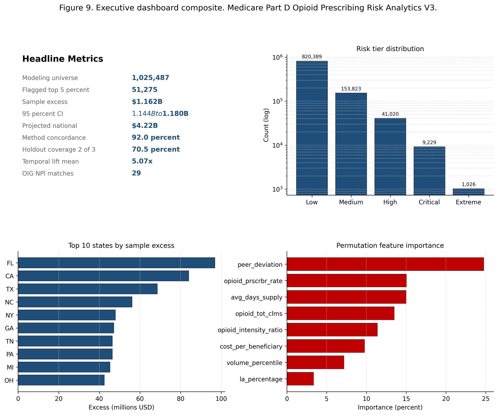

Medicare Part D Opioid Prescribing Analytics
A six feature risk scoring framework focused on opioid prescribing patterns within Medicare Part D. The analysis applies clinical exclusion logic to isolate the opioid prescribing universe, builds peer cohorts by state and specialty, and benchmarks every prescriber against cohort medians using both statistical scoring and isolation forest machine learning.
Methodology
The analytical universe is constructed by filtering the 2023 Medicare Part D Prescriber Public Use File to opioid prescribing activity. Clinical exclusions are applied to remove appropriate end of life and palliative care prescribing patterns, producing a final modeling universe of 1,025,487 prescribers across 191 specialties and 61 jurisdictions.
Six features are engineered with explicit formulas documented in the feature definitions table. Peer cohorts are built at the state plus specialty level, requiring a minimum of thirty prescribers per cohort, yielding 2,020 distinct peer groups. National baselines provide a secondary reference for cohorts that fall below the minimum size.
Risk scoring blends statistical features (weighted to sum to one) with an isolation forest configured at contamination 0.05 across one hundred trees with a fixed random seed. The top five percent of the combined score defines the flagged set.
Key findings
The flagged top five percent of opioid prescribers (51,275 providers) is distributed across five tiers: Extreme (1,026), Critical (9,229), High (41,020), Medium (153,823), and Low (820,389).
The isolation forest produces an independent anomaly set of 51,275 prescribers at the 0.05 contamination rate, providing a methodological cross check on the statistical scoring approach.
Peer benchmarking at the state and specialty level captures cohort variation that pure national baselines would obscure. A primary care opioid prescriber in West Virginia is benchmarked against West Virginia primary care peers, not against the national population.
Selected figures



Verification
Every numerical claim in this project traces to a persisted result file in the public rebuild repository. The full claims traceability table maps each number to its source file, notebook section, and computational basis. Independent reviewers can reproduce the modeling universe, the peer cohorts, the risk scores, and the flagged set from the same Medicare Part D Prescriber Public Use File.